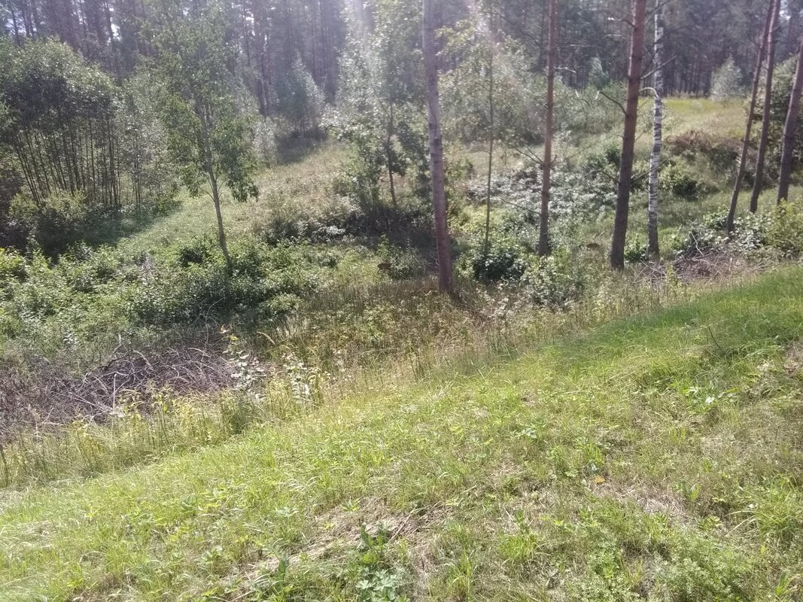
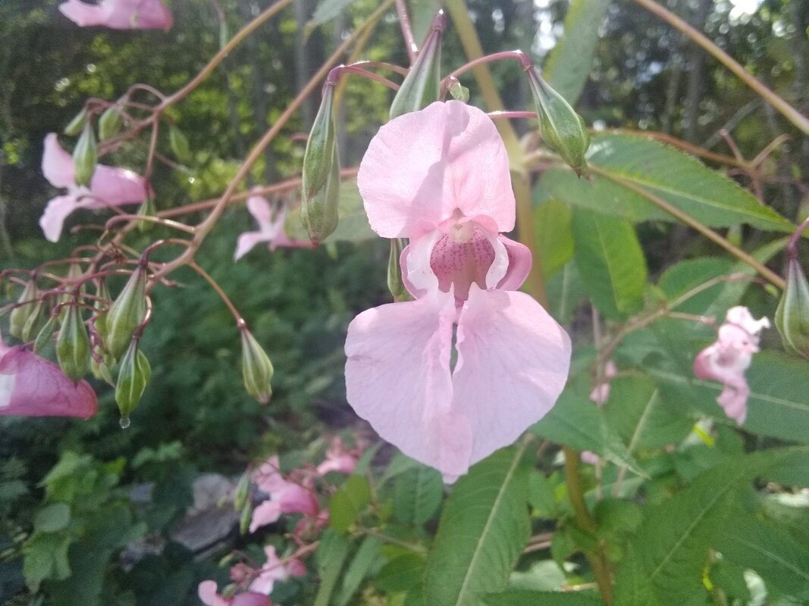
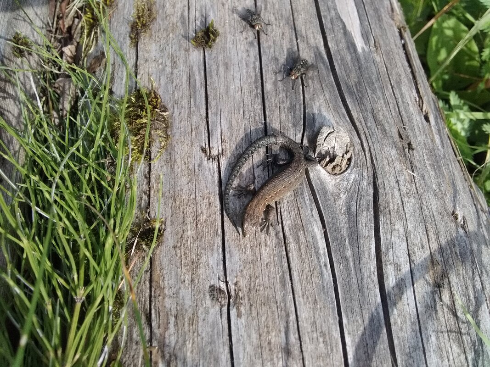
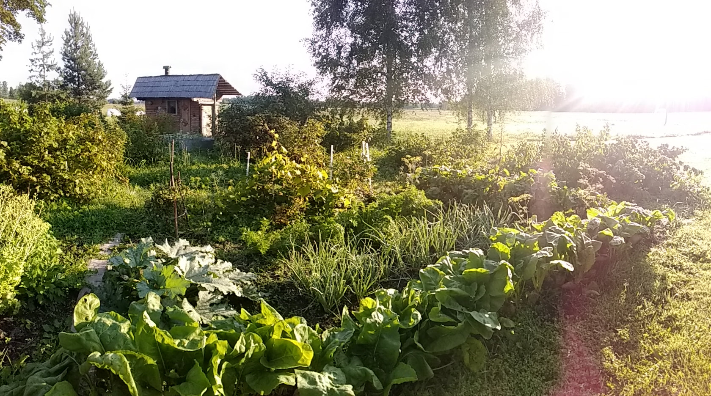
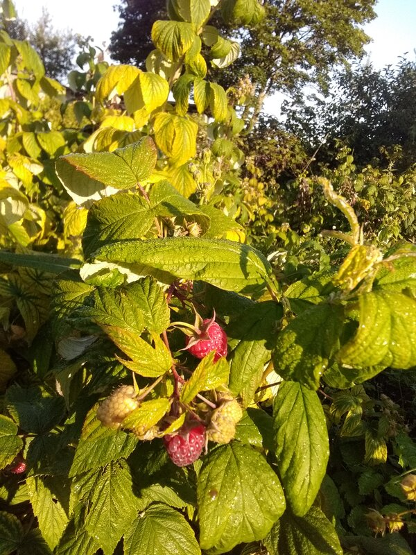

Ask Bilbo!
I know, it hasn’t been that long since I gave you my latest news. But I have to share what seems so important to me in my journey. I know I am redundant, and yet each time again, I am touched and moved by this kindness that welcomes me.
I must begin by telling you that the last days since I left Aglona have been wonderful. I have been alone and in silence since resuming my walk. The intermittent rain refreshes pleasantly this end of summer. However, it is not too important to hinder my progress. When the rain is really too strong, I stop, put up the tent and take refuge there, but it’s not that often. A few days ago though, I got a downpour that was Hollywood chewing gum level event, if you remember the nineties advertisement. It was so huge, so tropical shower level that it becomes fun in itself. You no longer have to worry about getting wet, it’s so impossible not to that it’s no longer a problem.
So it’s true that the atmosphere is really humid, but the good in that is that it attracts mushrooms which end up throwing themselves at my feet begging me to pick them up (yes like this). That’s awesome! I eat raw Boletus Edulis, because they are so fresh that there is no need to cook them. Which is good because I have nothing to cook anymore from a long time now. Yesterday I found the flesh of a big champagne cork shape one really sweet. It surprised me. Crunchy and sweet. Happiness...
And then I also collect Chanterelles. I keep them in a bag and try to dry them a bit as much and as often as possible. I always end up being invited by someone to cook them...
And then I arrived in this village where a grocery store was at the entrance. It was good because I needed to fill my backpack with food again. I did my shopping there, paid for everything, and the lady in charge of the grocery store asked me where I was coming from and what I was doing. She then offered to charge my phone if I needed, and we chatted.
It’s crazy how what I do—walking like this, a long pilgrimage, a long-lasting spiritual discipline—can inspire or make sense to the people I meet. It is even disturbing. My approach, however very particular, very surprising, very unusual, very incongruous even, turns out to be full of meaning also for those I meet... Full of meaning and nourishing too. Strange, isn’t it? There is even a kind of envy that I feel, a craving. As if I were realizing in this journey what many would like to, what many are starving for... I guess that’s why having the rule to take the time to share with whoever is interested is important.
After a while, she kindly offered me a coffee, which I gratefully accepted, because coffee is good! Especially when it’s offered like this. Of course, the coffee was served with many biscuits, chocolate, and white cheese bars sweetened and coated with chocolate or caramel (it’s pasty, somewhere between hard cream and fresh cheese, and sweet. I like it...).
We chatted using Google Translate until a client, an English teacher at the village college, arrived. So we chatted in English. Nice exchange.
Of the few new customers who passed by during my break at the grocery store, a dozen I would say, I had a friendly exchange with ten. More than half spoke with me or with the grocer, who told them about what we had already discussed. Four of them offered me their phone numbers in case I needed anything or help on my way.
Before going to sleep near the village lake, the grocer gave me a bag of tomatoes and cucumbers (the Baltic countries seem to have an impressive addiction to cucumbers... Small cucumbers, like big pickles... Over the past month, there hasn’t been a single day I’ve spent without cucumbers...).
I spent four hours in her shop, chatting with her while she worked or with her customers. It was really relaxed, and I managed to recharge my phone and power banks. Great! I gave her the bag of Boletus edulis mushrooms and chanterelles that I had picked that morning. It felt completely natural to give them to her. Then we said goodbye.
The evening was good! A swim in the lake, washing myself and my clothes. A beautiful night without rain (which is nice because the sound of rain on the tent canvas can be really loud!). And this morning, I resumed my journey.
In the afternoon, I arrived at a small country road—unpaved, with no tarmac—where I noticed someone walking about 100 meters ahead of me. It was a lady. Elderly. Old, but still walking briskly (87 years old! Respect!). It took me nearly a kilometer to catch up and walk alongside her. I could immediately tell she was a character—a nice one.
When she heard someone approaching behind her (I had deliberately rubbed my foot on the ground to make a little noise, so as not to startle her), she turned around with a warm smile, not a trace of fear or surprise. That alone says a lot.
We introduced ourselves and decided to walk together to her house, half a kilometer away. We had not gone 50 meters before I inherited one of the bags of tomatoes from her garden, which she carried in each hand.
Arriving in front of her house, I was invited in for a coffee. I gladly accepted! A good cup of coffee never hurts! (French proverb—or if not, it should become one soon...).
Watch the little movie I made—sorry, it’s in French; I didn’t think about it at the time. But aside from showing the beautiful place where she and her husband live, you can see her smile, her enthusiasm, her kindness. Notice the touching gesture of the small tablecloth she placed on the table for me, to hold the cup of coffee, along with a few slices of cheese on a plate, homemade donuts, and the white cheese treats I mentioned before.
Then I met her husband, as kind as she was.
I was invited to stay the night.
I was invited to use the sauna and shower.
I was invited to visit the property—a superb estate that belonged to her grandparents. It included a house, a barn, a garage, a henhouse, a sauna, and toilets behind the barn. There was a magnificent vegetable garden with enormous raspberries and blackcurrants. By the way, the homemade blackcurrant jam I ate with evening porridge was delicious.
Even the grass was soft and comfortable to walk on barefoot—something I was invited to do almost immediately.
She told me that tomorrow morning, before I leave, we will eat the mushrooms she collected, with potatoes. How does she know it’s my favorite dish at the moment—fresh mushrooms and potatoes, seriously! Ask Bilbo!!!
And then, go look at the pictures—come on, watch that splendid breakfast! ??
Finally, her husband showed me his workshop and his neatly arranged wood; she showed me her sober and simple interior. He showed me the sauna; she showed me the henhouse...
I’m falling asleep as I write these words... The evening meal, the sauna, the comfortably firm sofa bed, the faint smell of wood fire coming from the burner...
Once again, these people touch me and move me with the warmth of their welcome, the smiles in their kind eyes, and the care they show me, even though I’m a total stranger, completely unknown to them.














0 Comments